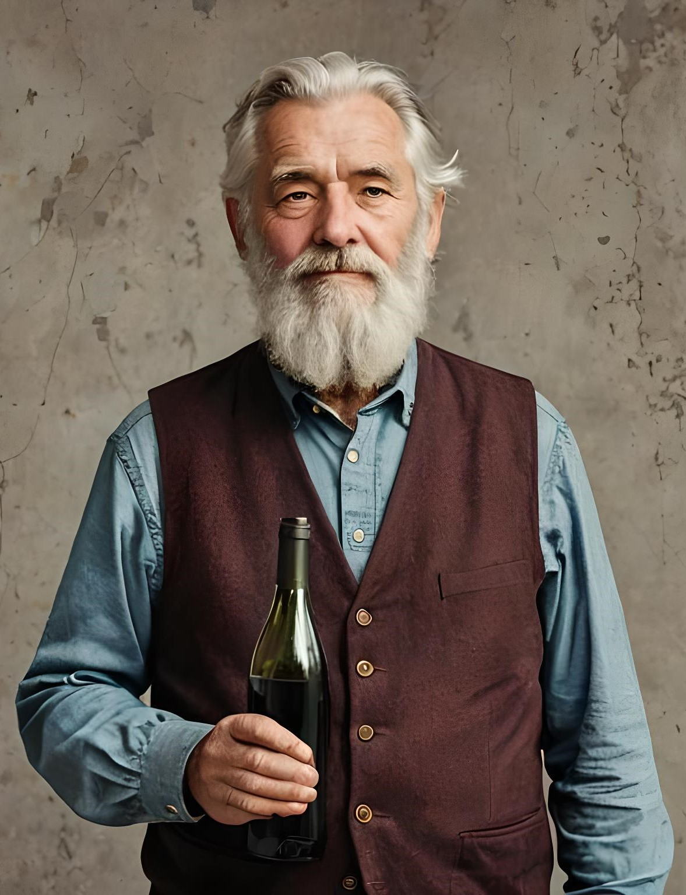

Történelmünk
Történetünk 1548-ban kezdődik, a magyar történelem egy igen intenzív korszakában. Ebben az évben alapította a borászatot névadónk, az 1510 körül született Tinódi Lantos Sebestyén. A megalapítás közvetlen oka az volt, hogy a költőt nem szolgálták ki egy vendégeskedés alkalmával. Ezen bánatát meg is énekelte a Sokfajta részögösről című művében. Az alapítás óta közel 500 év telt el. Ezen idő alatt az ország sok kézen átment, sok csatát és háborút élt meg.
1571-ben a török csapatok elérték Dunavárhegyet, és a város, ahogy a borászat maga is török kézre került. Ott is maradt közel 100 évig, amíg a magyar és osztrák csapatok vissza nem szerezték a város.Azonban a török kivonulása után nem ért véget a történetünk. Rengeteg történelmi személy kóstolta meg városunk híres borait, köztük Rákóczi, Ferenc József, Bem tábornok, Mikszáth Kálmán, illetve Winston Curchill, aki az italok nagy kedvelője volt.
"500 év tapasztalata egy pohárba öntve", így beszélt Orosházi Ferenc, a borászat jelenlegi igazgatója. Feladatunknak tekintjük, hogy a borászatunk, illetve városunk hírnevét gyarapítsuk. Ezzel a szándékkal készítettük el weboldalunkat, hogy többek számára mesélhessük el történetünket, és azért, hogy nagyobb közönség számára tegyük borainkat elérhetővé.
